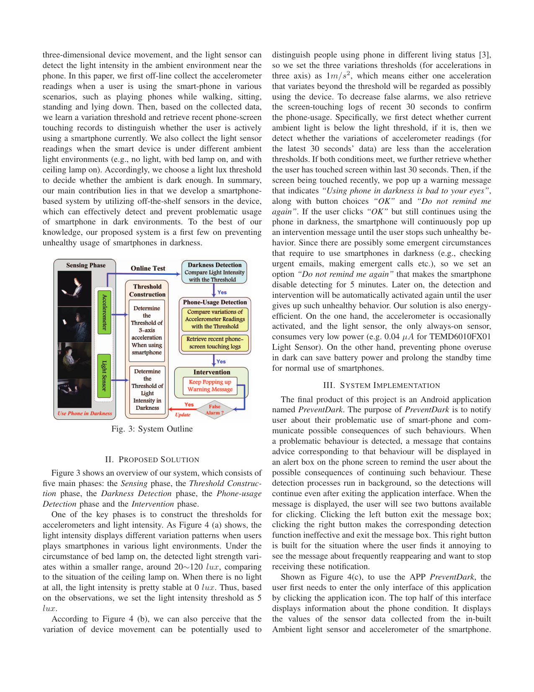

Problem
解决的问题
这篇论文属于“普适计算与鲁棒感知”方向，核心关注 Mobile Sensing, Robust Sensing, Pervasive Computing, Sensor Systems。它要解决的不是单纯提升一个指标，而是在 PerCom 场景下，让模型、数据或感知系统面对真实扰动和任务约束时仍然可用、可评估、可解释。围绕真实任务中的噪声、分布变化、资源约束或安全风险，建立更可靠的学习与评估流程。
Pervasive Computing and Robust Sensing · 2016 · PerCom
PreventDark Automatically Detecting and Preventing Problematic Use of Smartphones in Darkness
Problem
这篇论文属于“普适计算与鲁棒感知”方向，核心关注 Mobile Sensing, Robust Sensing, Pervasive Computing, Sensor Systems。它要解决的不是单纯提升一个指标，而是在 PerCom 场景下，让模型、数据或感知系统面对真实扰动和任务约束时仍然可用、可评估、可解释。围绕真实任务中的噪声、分布变化、资源约束或安全风险，建立更可靠的学习与评估流程。
Value
用于展示时，这篇论文可以放在“问题定义 - 方法设计 - 证据评估”的链条中理解。它的价值在于把 Mobile Sensing 具体化为一个可实验验证的研究问题，并通过 IEEE International Conference on Pervasive Computing and Communications (PerCom)（CCF B, CORE A*） 的发表形态呈现该方向的代表性进展。
Extracted Figure Page
该页从原文 PDF 第 2 页截取，通常包含方法框图、系统流程、算法说明或实验设置。展示时可先用它建立视觉锚点，再结合下方中文说明讲清研究问题与技术贡献。
打开原文第 2 页
Technical Route
Innovation